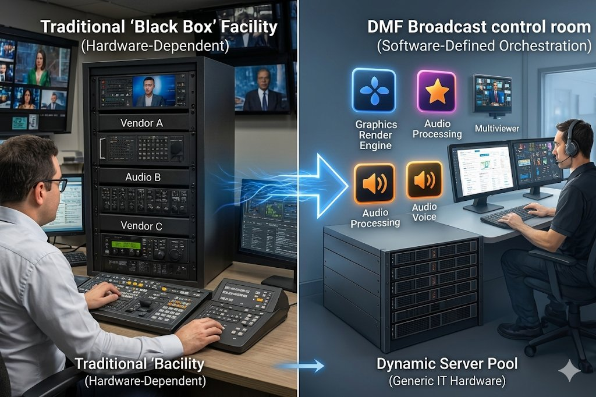

Dynamic Media Facilities (DMF): The Future of Flexible Broadcast Infrastructure
Dynamic Media Facilities (DMF) explained simply — what it is, how it works, and why it became a key topic at NAB Show 2026 for modern broadcast infrastructure.

The broadcast industry is moving away from the era of "fixed boxes." Following the buzz at NAB Show 2026, one term is dominating the conversation: Dynamic Media Facilities (DMF).
But what exactly is DMF, and why is it becoming the reference model for modern media houses? This guide breaks it down from the basics through to practical deployment considerations.
1. What is DMF? (The end of the "black box")
Traditionally, broadcast facilities were built using specialised physical hardware. You had one box for vision mixing, one for graphics, and another for audio. If you wanted to do more, you had to buy more boxes.
Dynamic Media Facilities (DMF) flips this model. It is a software-defined approach where broadcast functions — such as switching, mixing, graphics, and monitoring — run as software applications on shared IT servers.
The shift: we are moving from "hardware-centric" (fixed) to "software-defined" (fluid). The image above captures this transition clearly — a rack of single-purpose vendor boxes on one side, and a pool of generic servers hosting multiple media applications on the other.
2. How do you deploy a DMF setup?
DMF does not care where the processing happens. It leverages standard IT infrastructure to run high-end media tasks. You can deploy it on:
- On-premise servers — running in local data centres inside the broadcast facility.
- Public cloud — running as virtual instances on hyperscale cloud platforms.
- Hybrid environments — a mix of on-premise and cloud, depending on the workload.
Instead of physical cables and patch panels, software functions are connected digitally. This means an entire studio workflow can be reconfigured in minutes instead of weeks.
3. What does "dynamic" actually mean?
In a traditional setup, capacity is static. In a DMF-based facility, capacity is elastic.
- Flexibility — reconfigure workflows on demand.
- Scalability — pull more compute when needed.
- Elasticity — spin up or shut down workflows without hardware changes.
4. A simple comparison: the "pizza oven" vs. the "cloud kitchen"
Traditional facilities are like a single-purpose pizza oven — efficient at one thing, but built around a fixed output.
DMF is more like a modern cloud kitchen — the same underlying infrastructure can prepare different outputs on demand, scale up when orders spike, and scale down when they quieten. The kitchen adapts to demand instead of forcing demand to fit the kitchen.
5. Real-world use cases
- Live sports and events — spin up additional channels or feeds during peak events, then release the capacity afterwards.
- Pop-up channels — launch a temporary channel for a tournament, election, or seasonal programming without deploying new hardware.
- Remote production (REMI) — distribute production roles across locations, with the processing layer running centrally on shared infrastructure.
6. DMF vs. traditional facilities
| Dimension | Traditional Facility | Dynamic Media Facility (DMF) |
|---|---|---|
| Hardware | Dedicated single-purpose boxes | Shared IT servers |
| Scaling | Fixed ports | Elastic software instances |
| Setup time | Weeks | Minutes |
| Skillset | Broadcast engineering | Broadcast IT, networking, DevOps |
7. Challenges to consider
DMF is not a drop-in upgrade. The shift introduces real operational changes that broadcast teams need to plan for:
- IT skill requirements — teams need comfort with virtualisation, containers, and cloud-native operations alongside traditional broadcast knowledge.
- Software and network-based troubleshooting — the failure modes move from "replace the bad box" to "inspect the logs, check the network, trace the container."
- Cultural shift — moving from a hardware-first mindset to a platform-first one takes time, and it is as much about process and training as it is about technology.
Bottom line
DMF is not about replacing everything overnight. It is about building flexibility into broadcast infrastructure so that systems can evolve instead of being replaced. For facilities planning their next refresh cycle, the question is no longer "which box do we buy?" — it is "which workloads do we run on shared infrastructure, and which still need a dedicated appliance?"
That is the conversation NAB 2026 brought to the front of the room, and it is the conversation that will shape broadcast capex and opex decisions for the rest of the decade.